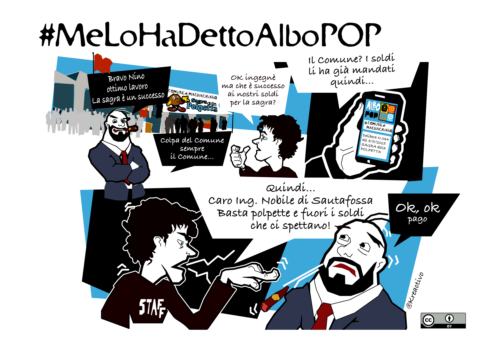
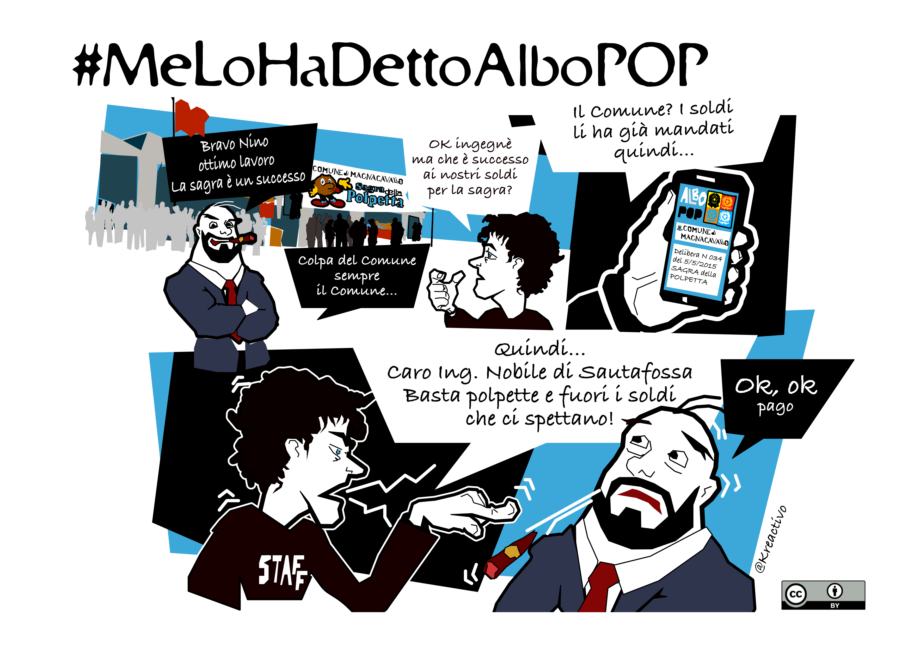
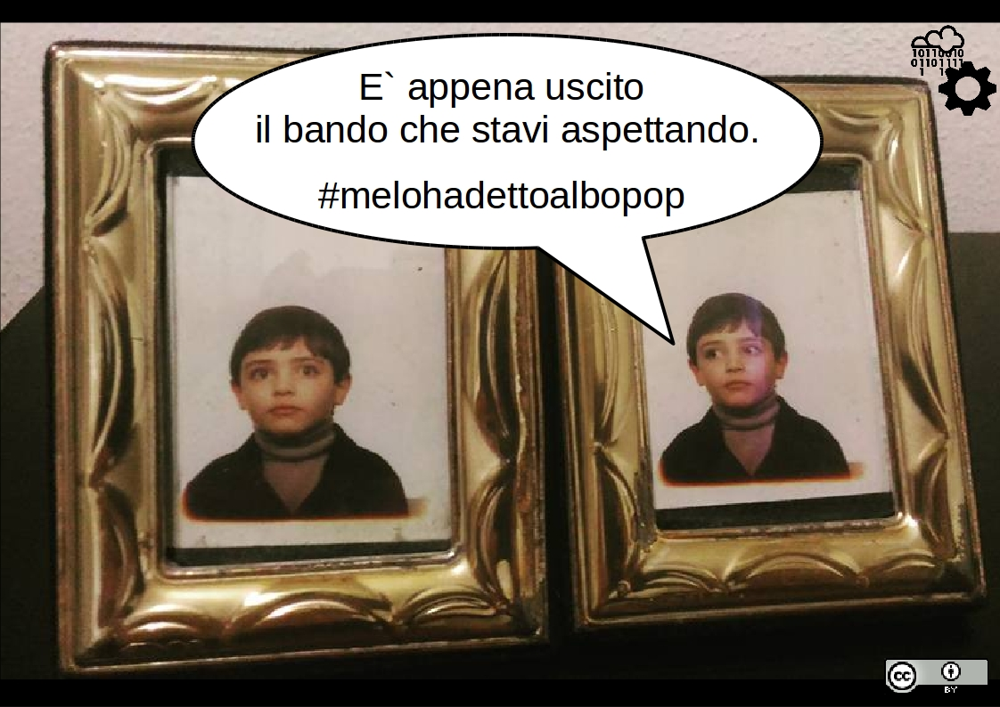
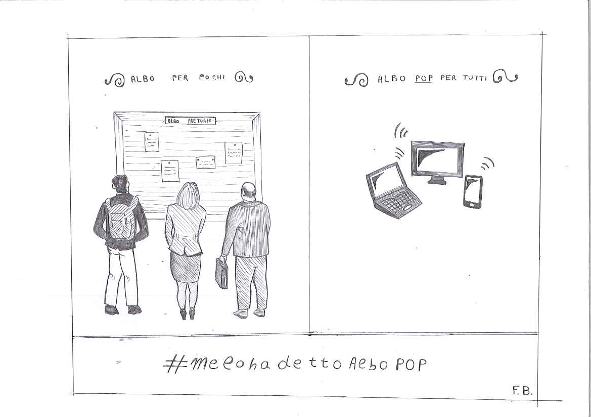

opendatahacklab - contributions to albo pop
THE OPEN DATA HACKING LABORATORY - Powered by WT-TECH
THE OPEN DATA HACKING LABORATORY - Powered by WT-TECH
The
opendatahacklab
contributed to the Albo Pop project
with the followings:
Some albo-pop friends contributed provided some flyers to describe real-life situations in which albo pop can help. We invite all of you to contribute as well in all the ways you like!



The PHP sources of these Albo can be found in the
respective subdirectories of the code
directory of the Albo
POP project sources repository, plus the
RSS
directory which contains shared classes.
These Albo provides these RSS feeds: